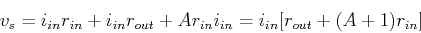
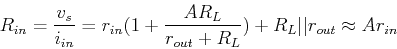

Next: About this document ...
- Voltage gain: Assume an ideal voltage source is applied to the
input port AB. Apply KVL to the loop to get:

i.e.,
The voltage across the output port CD is:
i.e.,
- Input resistance: Assume a load
 is connnected to the output
port CD. Apply KVL to the two loops and get:
is connnected to the output
port CD. Apply KVL to the two loops and get:
Solving the second equation we get
Plugging that into the first equation we get
i.e.,

- Output resistance: Apply a source voltage with an internal
resistance
 to the input port AB, and get
to the input port AB, and get
i.e.,
The open-circuit output voltage is:
Next, we find short-circuit output current. Due to superposition (two voltage
sources and ) we have:
Now we get:
The approximation is due to the assumption that and both and
are very small.
Next: About this document ...
Ruye Wang
2016-02-16